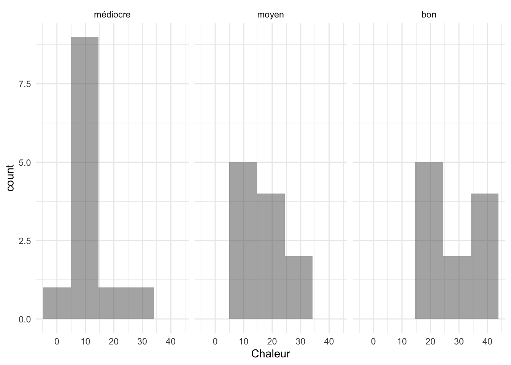

library(ggplot2)
library(dplyr)
Attaching package: 'dplyr'The following objects are masked from 'package:stats':
filter, lagThe following objects are masked from 'package:base':
intersect, setdiff, setequal, unionOn va d’abord regarder les représentations graphiques univariées.
On a deux types de variables :
qualitatives : les modalités (valeurs) sont des catégories
quantitatives : les valeurs sont numériques.
On va utiliser le package ggplot2 qui est actuellement le package de référence pour les graphiques.
library(ggplot2)
library(dplyr)
Attaching package: 'dplyr'The following objects are masked from 'package:stats':
filter, lagThe following objects are masked from 'package:base':
intersect, setdiff, setequal, unionOn veut représenter le nombre de voitures correspondant à chaque catégorie de cyl :
data("mtcars")
library(ggplot2)
ggplot(mtcars,
aes(x=factor(cyl)))+
geom_bar()Un graphique ggplot commence toujours par la fonction du même nom dans laquelle on indique le data frame (obligatoirement un df) et aes (Aesthetic mappings) qui décrit les variables qui vont être décrites.
On peut ajouter des titres aux axes et un titre au graphe :
ggplot(mtcars,
aes(x=factor(cyl)))+
geom_bar()+
labs(
title="Diagramme en barres",
x="NB cylindres",
y="NB voitures"
)On peut aussi paramétrer le fond du graphique :
ggplot(mtcars,
aes(x=factor(cyl)))+
geom_bar()+
labs(
title="Diagramme en barres",
x="NB cylindres",
y="NB voitures"
)+
theme_minimal()Ou sous la forme de diagramme circulaire (avec les poucentages correspondants)
library(scales)
df=as.data.frame(table(mtcars$cyl))
colnames(df)[1]="Nb.cyl"
df=df%>%
mutate(Prop=percent(Freq/sum(Freq)))
ggplot(df, aes(x="", y=Prop,fill=Nb.cyl)) +
geom_bar(stat="identity", width=1) +
geom_text(aes(label = Prop),
position = position_stack(vjust = 0.5))+
coord_polar("y", start=0)+
theme_void()On peut aussi les mettre selon la même technique sur le diagramme en barres.
Sous la forme d’histogramme :
ggplot(mtcars,aes(x=wt))+
geom_histogram(bins=5,alpha=.4)+
theme_minimal()Les effectifs sont représentés en ordonnées, bins donne le nombre de classes qui vont être construites et alpha
ou bien en points par points (on va utiliser la couleur pour distinguer les espèces) :
ggplot(mtcars,aes(x="",y=wt))+
geom_jitter(width = .05)+
theme_minimal()On peut y ajouter un boxplot :
ggplot(mtcars,aes(x="",y=wt))+
geom_boxplot()+
geom_jitter(width = .05)+
theme_minimal()Pour les boxplot c’est simple :
ggplot(mtcars,aes(x=factor(cyl),y=wt))+
geom_boxplot()+
theme_minimal()+
labs(x="Nb cylindres")Pour les histogrammes :
ggplot(mtcars,aes(x=wt,fill = factor(cyl)))+
geom_histogram(alpha=.4,bins=5)ou bien :
ggplot(mtcars,aes(x=wt))+
geom_histogram(bins=5,alpha=.4)+
facet_grid(~cyl)+theme_minimal()ggplot(mtcars,aes(x=wt,y=mpg))+
geom_point()+theme_minimal()
library(ggstats)
ggplot(mtcars,aes(x=factor(cyl),fill=factor(vs)))+
labs(
x="Nb de cylindres",
title="Proportions des classes",
y="Proportions"
)+
geom_prop_bar()+
geom_prop_text()+
theme_minimal()Télécharger le fichier temperat puis ouvrez le dans RStudio (utiliser l’interface graphique), la première colonne correspondra aux noms des lignes du data.frame.
Premier travail : On veut reproduire le graphe suivant :
aide : utiliser label=… dans aes et geom_text()
Deuxième travail : Représenter les températures moyennes pour les trois villes : Nantes, Brest et Rennes.
library(reshape2)
df=as.data.frame(t(data%>%select(Jan:Dec)))
df$mois=1:12
df2=df%>%
select(mois,Nant,Renn,Bres)%>%
melt(id.vars = "mois",variable.name = "Ville")
ggplot(df2,aes(x=mois,y=value,color=Ville))+
geom_point()+
geom_line()+
theme_minimal()+
scale_x_discrete(limits=factor(1:12),labels=rownames(df))On peut redéfinir
Télécharger le fichier bordeaux1 et ouvrez le dans R à l’aide de l’interface graphique. Les années seront utilisées pour nommer les lignes.
Il s’agit des données des vins de Bordeaux issues de “Méthodes statistiques en gestion” (M. Tenenhaus, Dunod, 1994).
On cherche à étudier l’éventuelle relation entre la qualité du vin et les variables météorologiques. Les variables sont les suivantes : TEMPERATURE : somme des températures moyennes journalières, SOLEIL : durée d’insolation, CHALEUR : nombre de jours de grande chaleur, PLUIE : hauteur des pluies, Y (QUALITE DU VIN) : 1 (Bon), 2 (Moyen), 3 (Médiocre).
data$Y1<-factor(data$Y1,levels=c("médiocre","moyen","bon"))
ggplot(data,aes(x=Y1,y=Temperature))+
geom_boxplot()+
labs(
x="Qualité du vin",
y="Température"
)+
geom_hline(yintercept = mean(data$Temperature),
linetype="dashed",
colour="red")+
theme_minimal()ggplot(data,aes(x=Y1,y=Pluie))+
geom_boxplot()+
labs(
x="Qualité du vin",
y="Pluie"
)+
geom_hline(yintercept = mean(data$Pluie),
linetype="dashed",
colour="red")+
theme_minimal()ggplot(data,aes(x=Chaleur))+
geom_histogram(bins=5,alpha=.5)+
facet_grid(~Y1)+
theme_minimal()
Faibles lorsque la variable PLUIE sera inférieure à sa médiane
Fortes lorsque la variable PLUIE sera supérieure ou égale à sa médiane.
Dessiner la répartition de la qualité des vins en fonctions des deux modalités Faibles et Fortes.
med<-median(data$Pluie)
data$pluie_quali<-factor(
as.numeric(data$Pluie>med),labels = c("Faibles","Fortes"))
ggplot(data,aes(x=Y1,fill=pluie_quali))+
geom_prop_bar()+
geom_prop_text()+
xlab("Qualité du vin")ggplot(data,aes(x=Temperature,y=Pluie,color=Y1,label=Annee))+
geom_text()+theme_minimal()